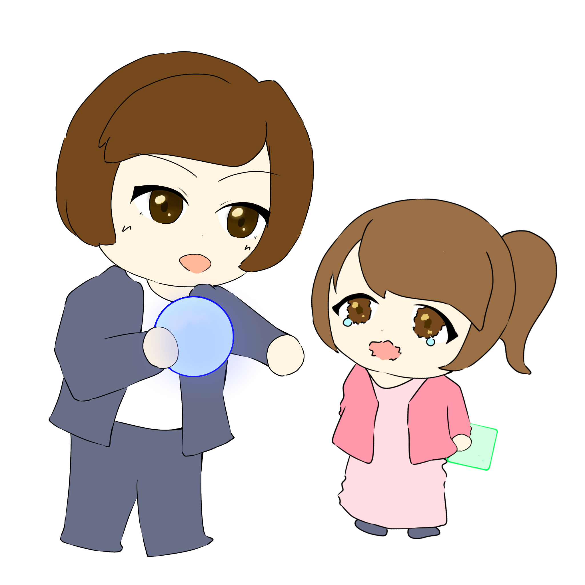

「相手のことを理解するために意識していることは何ですか？」
相手のことを理解するのって難しいと思うんですけど普段意識していることはありますか？


これは証券会社で働いていた時のことで、当時のチームの部下だった人から「のぞみさんは自分の“ものさし”で測っている」って言われたんですよ。めちゃくちゃショックでガーンって感じだったんですけど、今思うと言われてよかったなと思います。すっごいショックだったけど、確かにっていうのは思ったので、それから結構しょっちゅうその言葉を思い出すようにしています。
そんなことがあったんですね。
ちょっとあの価値観が違うかもとか理解し合うのが難しいかもって思った時に、自分の中だけで作られた“ものさし”だけでもない、いろんな環境とかに作られてる別の“ものさし”もあるはずだっていうのは、思うようにしてますね。そっちが尊重されないと、私のもの差しも尊重されないというか。